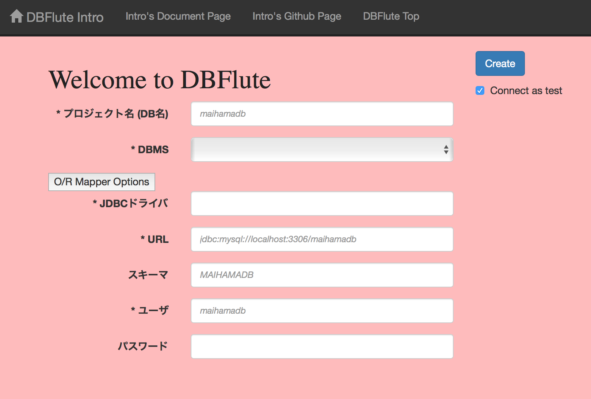
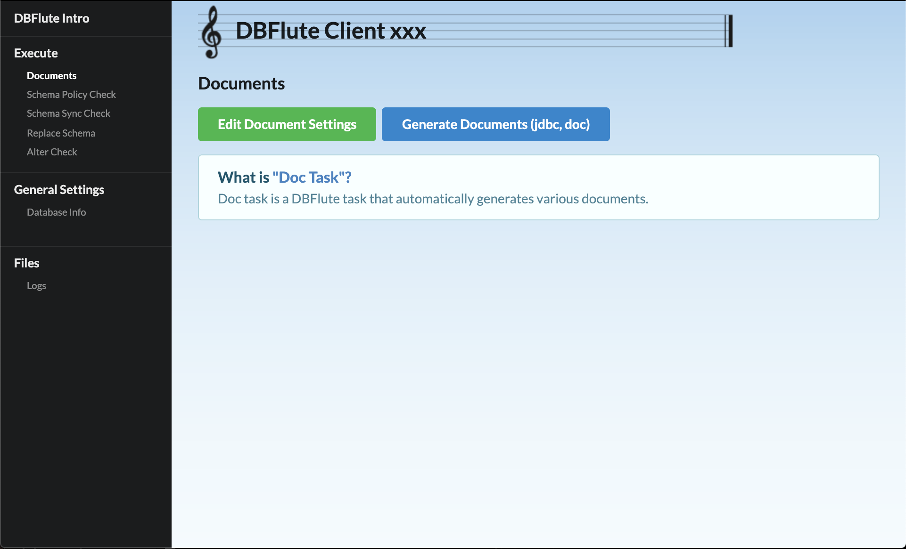
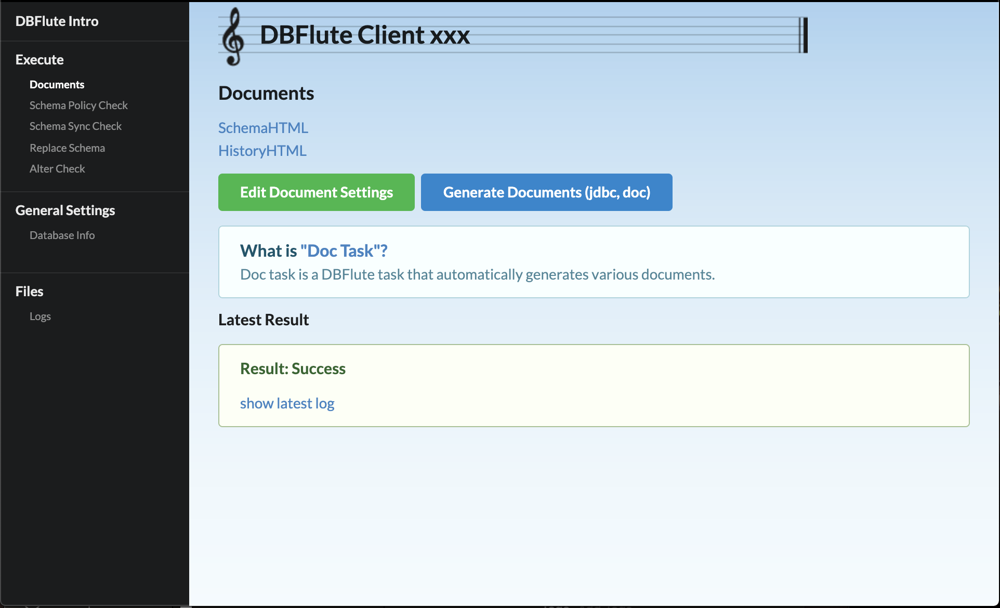
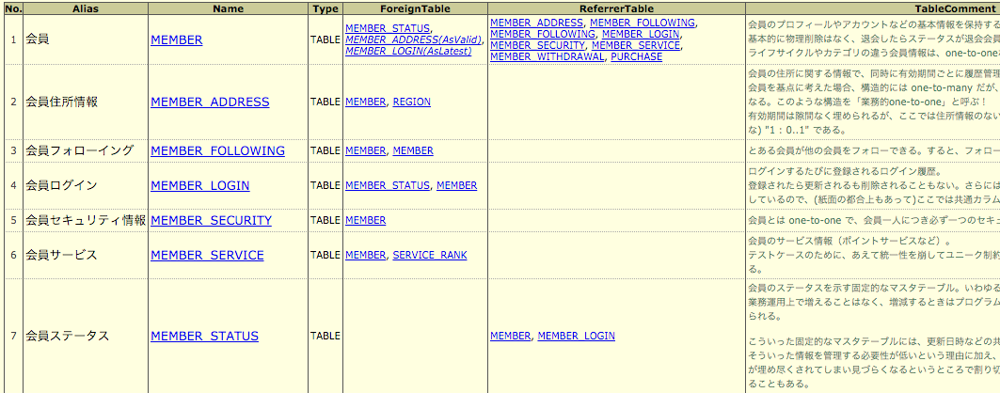

DBFlute Intro (いんとろ)
Alto DBFlute の利用を支援するための、IDEなどに依存しない独立したGUIツールです。
${indexlist}DBFlute Introとは？
アプリの外側で活躍するDBFluteの機能 (Alto DBFlute) を、インストールから実行までGUIだけで実行できるツールです。 Javaの実行環境(JRE)さえあれば利用できる導入しやすいツールです。
Github で開発されているオープンソースです。 DBFlute本体とは、独立した運用がされていますので、本家のサイトにも注目です。(ということで、ここでは、簡単な利用方法の説明だけをしていきます)
以下のようにリリースされています。
- 2019/01/01
- 0.3.3 :: AlterCheckの調整、SchemaPolicyCheckの設定
- 2018/12/01
- 0.3.2 :: ReplaceSchema, AlterCheckの実行
- 2018/10/21
- 0.3.1 :: Java11 で実行できるように
- 2018/09/24
- 0.3.0 :: riot.jsに移行、細かい改善
- 2018/09/01
- 0.2.3 :: 起動IPを指定できるように (for デコメントサーバー)
- 2018/06/30
- 0.2.2 :: デコメントサーバーモードをサポート
- 2018/05/20
- 0.2.1 :: デコメントの改善、ハコメントのデビュー
- 2018/01/01
- 0.2.0 :: デコメントのプロダクションリリース
- 2017/11/26
- 0.1.3 :: デコメントのファーストリリース
- 2017/05/05
- 0.1.2 :: DBFluteのセットアップ、SchemaHTMLなど基本を一通り
Introのダウンロード
インストールという概念はありません。単にファイル (.jar) を一つダウンロードするだけです。
Githubのリリースページから最新版をダウンロードできます。
- Introのリリースページ
- dbflute-intro Releases | Github
そして、例えば以下のよう感じで、どこかのディレクトリに入れておくと良いでしょう。
e.g. DBFlute Intro のjarファイルを dbflute-intro ディレクトリ配下に @Directory
...
|-...
|
|-dbflute-intro
| |
| |-dbflute-intro.jar
|
|-...
もし、DBFlute を "O/Rマッパー" としても利用する想定であれば、クラスを自動生成するプロジェクトの直下に置きましょう。
e.g. DBFlute Intro のjarファイルを maihama プロジェクトディレクトリ配下に @Directory
...
|-maihama
| |-src/main/java
| |-src/main/resources
| |-...
| |-dbflute-intro.jar
| |-...
| |-pom.xml
|
|-...
特にバージョン番号は付けていません。アップグレードするときは上書きしてしまいましょう。起動するとメイン画面の下の方に表示される System Info にバージョンが表示されます。常に最新を使っていきましょう。
使い方の流れ
DBFlute Intro を起動
- Mac/Windows
- コマンドラインから... java -jar dbflute-intro.jar
※javaコマンドが叩ける必要があります。
まずは Welcome !
DBFlute Intro を起動すると、DBFluteをセットアップするための最低限必要な情報 を入力する画面が ブラウザ で表示されます。(起動に少し時間がかかるのでお待ちください)
Welcome画面
Welcome画面 
{kind=link}
セットアップするための最低限の項目
- *Project Name
- DBFluteクライアントのプロジェクト名、通常はスキーマ名を指定
- *DBMS
- 対象のデータベースの種類 e.g. MySQL, PostgreSQL, Oracle
- *JDBC Driver
- JDBCドライバのクラス名、DBMSを選択すると自動入力される
- JDBC Driver Path
- JDBCドライバのjarファイルのパス (補足あり)
- *URL
- JDBCでデータベースに接続するためのURL (補足あり)
- Schema
- 接続するスキーマ、OracleやDB2などでは必須
- *User
- データベースに接続するときのユーザ
- Password
- データベースに接続するときのパスワード
JDBCドライバのパスの補足
DBFlute Intro は "JDBCドライバ" を利用して接続するため、JDBCドライバが DBFlute に同梱されていないDBMS(同梱が許されていないDBMS)の場合は、自分でダウンロードする必要があります。
- MySQL
- 同梱されているので指定不要
- PostgreSQL
- 同梱されているので指定不要
- Oracle
- "ojdbc7.jar ダウンロード" で検索してダウンロード画面へ
- DB2
- "db2jcc.jar ダウンロード" で検索してダウンロード画面へ
- SQLServer
- "sqljdbc4.jar ダウンロード" で検索してダウンロード画面へ
- H2 Database
- 同梱されているので指定不要
- Apache Derby
- "derby ダウンロード" で検索してダウンロード画面へ
JDBC接続URLの補足
DB接続のURLは、DBMSを選択することで自動入力されるURLひな形の xxx 部分にデータベース名もしくはスキーマ名を入力します。例えば、以下のような感じになります。
- MySQL
- jdbc:mysql://localhost:3306/maihamadb
- PostgreSQL
- jdbc:postgresql://localhost:5432/maihamadb
- Oracle
- jdbc:oracle:thin:@localhost:1521:XE
- DB2
- jdbc:db2://localhost:50000/dfexdb
- SQLServer
- jdbc:sqlserver://localhost:1433;databaseName=maihamadb;
- H2 Database
- jdbc:h2:file:../src/main/resources/maihamadb/maihamadb
- Apache Derby
- jdbc:derby:../src/main/resources/librarydb;create=true
O/Rマッパーのための項目
O/Rマッパーとしての利用も想定しているなら、"O/R Mapper Option" を押して追加項目も調整しましょう。
- *Language
- 自動生成クラスのプログラミング言語 e.g. Java
- *DI Container
- 自動生成クラスが利用するDIコンテナ e.g. Lasta Di, Spring
- *Generation Package
- 自動生成クラスのパッケージ e.g. org.docksidestage.dbflute
connect as test で接続テスト
"connect as test" にチェックを入れた状態で Create すると、入力された情報で実際にデータベースにテスト接続しにいきます。 接続できない場合は、入力情報に間違いがある可能性があるので入力し直しましょう。
Create ボタンで Create
Create ボタンを押すと、最新版の "DBFluteエンジン" をダウンロードして、入力された情報を元にDBFluteクライアントをセットアップします。
成功すれば、その作成したDBFluteクライアントの操作画面に自動で遷移します。 DBFlute Intro の war ファイルと同じディレクトリを見ると、DBFluteクライアントとDBFluteエンジンがあるはずです。 (mydbfluteの下には、intro_resourcesというディレクトリがあり、Intro自体のログなどが出力されています)
e.g. DBFlute Intro のwarファイルを maihama プロジェクトディレクトリ配下に @Directory
...
|-dbflute_maihamadb
|
|-mydbflute
| |-dbflute-1.1.1
| |-intro_resources
| | |-log
| | | |-app_intro.log
|
|-dbflute-intro.jar
|
|-...
とりあえず、テーブル定義ドキュメント (SchemaHTML)
Welcome画面で Create が終わると、DBFluteクライアントのOperate画面が表示されます。この画面で様々な DBFlute の操作ができますが、まずはドキュメントを生成しましょう。
Operate画面の初期状態
Operate画面 
{kind=link}
ドキュメントの生成ボタン
"Generate Documents (jdbc, doc)" を叩いてみましょう。 (DBFluteクライアントを経由して、JDBCタスクとDocタスクが実行され、実際にデータベースにアクセスしてドキュメントを自動生成します)
少し待つと、"テーブル定義ドキュメント (SchemaHTML)" へのリンクが表示されます。
Operate画面のドキュメントリンクあり
Operate画面のドキュメントリンクあり 
{kind=link}
ドキュメントリンクをクリック
したら、"Open the table layout, SchemaHTML" のリンクをクリックしてみましょう。
ブラウザ上の別タブで SchemaHTML が表示されます。
SchemaHTML Example 
DB変更したら、またドキュメント生成 (HistoryHTML)
DBが変わったら、またドキュメント生成をしましょう。
最新のSchemaHTML
ドキュメント生成ボタンを押して SchemaHTML を開くと、新しいスキーマの情報が表示されます。
このように、ボタンを押せばすぐに最新状態のドキュメントが生成できます。
HistoryHTML表示リンク
そして、HistoryHTMLリンクをクリックしてみましょう。DB変更の履歴が表示されます。
HistoryHTMLの例

Introのいろいろな機能
DBコメントにデコメント
Intro経由で開いたSchemaHTML上で、DBコメントを追加・修正できます。
DBコメントにハコメント
Intro経由で開いたHistoryHTML上で、履歴コメントを追加・修正できます。
DBFlute本体はどこに？
DB接続環境を保持している "DBFluteクライアント" と、ダウンロードされた "DBFluteエンジン" は、DBFlute Intro のすぐ近くで以下のような感じで配置されています。
e.g. DBFlute Intro のファイルを dbflute-intro 配下に @Directory
どこかのディレクトリ
|-...
|
|-dbflute-intro
| |-dbflute_xxx // DB名が yourdb なら dbflute_yourdb
| | |-dfprop // DB接続情報が保持されている、その他もろもろの設定
| | |-log // DBFlute実行時のログ
| | |-...
| |
| |-mydbflute
| | |-dbflute-1.x.x
| |
| |-dbflute-intro.jar
|
|-...
DBFluteクライアントは、DB接続情報などDBFluteのもろもろの設定です。一つのDBにつき、一つのクライアント(ディレクトリ)が作成されます。
DBFluteエンジンは DBFlute の本体そのものであり、DBFlute Intro も人も直接ここのファイルをさわることは基本的にありません。